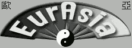

<table border="0" bgcolor="#ffffff" width="610">
  <tr>
    <td valign="top"><font size="-1">
<br>
<br>
If you are using uCON64 you may also consider visiting one of these cool sites<br>
<br>
<a href="http://sourceforge.net"></a><br>
<a href="http://www.dcemulation.com/"></a><br>
<a href="http://petition.eurolinux.org/"></a><br>
<a href="http://ukcdr.org/issues/cd/quick/"></a><br>
<a href="http://www.anime.org/~sakura/"></a><br>
<a href="http://www.eff.org"></a><br>
<a href="http://www.eurasia.nu"></a><br>
<a href="http://www.gamebase64.com/">GB64.COM - C64 Games, Database, Music, Emulation, Frontends, Reviews and Articles</a><br>
<a href="http://www.gamefaqs.com/">GameFAQs - Video Game FAQs, Cheats, Codes, Reviews, and Message Boards</a><br>
<a href="http://www.hwb.acc.umu.se/">HwB: The Hardware Book</a><br>
<a href="http://www.c64.com/">[www.c64.com]</a><br>
<a href="http://www.irtc.org/">The Internet Ray Tracing Competition</a><br>
<a href="http://ian-albert.com/misc/gamemaps.php">Video Game Maps - Ian-Albert.com</a><br>
<a href="http://c64.tin.at/">The C64 Adventure Game Solutions and Walkthrough Site</a><br>
<a href="http://speeddemosarchive.com">Speed Demos Archive</a><br>
<a href="http://www.c64-longplays.de.vu/">C64-Video-Longplays</a><br>
<a href="http://www.back2roots.org/">Back to the Roots - Amiga Culture Directory Project</a><br>
<a href="http://www.freeoldies.com/">Freeoldies, the abandonware search engine, oldies, vieux jeux</a><br>
<a href="http://www.kultboy.com/">ASM - Zeitschrift, Cover, Testberichte, Scans, Magazin, Infos.</a><br>
<a href="http://en.wikipedia.org/wiki/List_of_video_game_consoles">List of video game consoles - Wikipedia, the free encyclopedia</a><br>
<a href="http://en.wikipedia.org/wiki/Video_game_console">Video game console - Wikipedia, the free encyclopedia</a><br>
<a href="http://www.ukresistance.co.uk/2005/11/blue-sky-in-games-campaign-launched.html"></a><br>
<a href="http://www.gazunta.com/wwtg/wiki/pmwiki.php">What Was That Game</a><br>
<a href="http://www.pdroms.de">PDRoms - Your legal source for homebrew console and handheld productions</a><br>
<a href="http://www.detstar.com/">D e t s t a r . c o m - Detstar Gaming Network</a><br>
<a href="http://www.pbernert.com/">Pete's Domain</a><br>
<a href="http://www.robwebb.clara.co.uk/backup/">Robert Webb - Neo-classic Gaming and Collecting</a><br>
<a href="http://www.kultpower.de/">Kultpower.de - Die Powerplay und ASM Fan Site</a><br>
<a href="http://www.fcc.gov/oet/fccid/">OET -- FCC ID Number Search Page</a><br>
<a href="http://www.robwebb.clara.co.uk/backup/">Robert Webb - Neo-classic Gaming and Collecting</a><br>
<!--a href="http://www.front.com.tw">FFE</a-->
<!--a href="http://www.superufo.com/">SuperUFO</a-->
<!--a href="http://www.ntscco.com.hk">New Tai Sang CO</a-->
<!--a href="http://www.lan-kwei.com/">Lan Kwei Trading</a-->
<a href="http://www.tototek.com/">ToTotek</a><br>
<!--a href="http://www.lik-sang.com">Lik-Sang online</a-->
<!--a href="http://www.hkems.com/">Welcome To EMS Production Limited</a-->
<a href="http://www.gsarchives.net/index2.php">Game Sprite Archives</a><br>
    </td>
  </tr>
</table>
